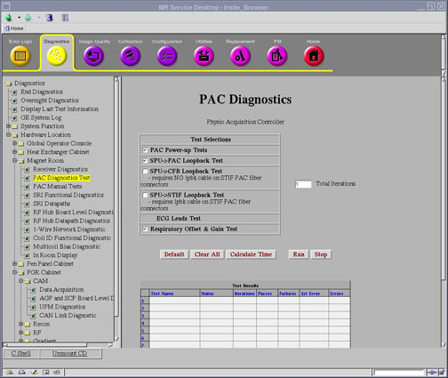

Proprietary to General Electric
Direction 5500113, Rev# 3
Discovery MR750 3.0T Service Methods
Module Version 3.0, Version Date 7/16/08
Proprietary to General Electric |
Diagnostics >> Hardware Location >> Magnet Room >> PAC Diagnostics
Illustration 1: PAC Diagnostics Screen

This test causes the SPU to initiate a PAC module power-up. The diagnostic logs the first error found.
PAC Module
Communication link between SPU (at the TRF board), STIF, CFB, and PAC
After the diagnostic is complete, a TPS reset is required prior to scanning.
None
Select PAC Power-Up Tests from the PAC Diagnostics screen.
Click [Calculate Time] to get an estimate of the time it will take to run the selected diagnostics.
Click [Run] to initiate test.
| NOTE: | The Test Options settings should not be changed from their default settings unless instructed to do so by a GE Healthcare engineer. There are very few circumstances when these settings ever need to be changed. |
Output values are judged pass or fail. In the event of failure, the details of the failure can be found in the GE System Log.
If the test failed, try running the SPU to STIF Loopback test PAC Manual to verify the SPU and STIF data path. If the SPU to STIF loopback passes, try running the SPU to CFB loopback to verify the fiber cables to CFB and the CFB module. If the SPU to CFB loopback passes, check the fiber cables between CFB and PAC using visual inspections, also check the Tx/Rx connections between CFB and PAC. If the cables and Tx/Rx connections are all OK, replace PAC with a new one.
Although, in the case of errors you can click the 1st Error number to see the nature of the error, it is recommended that you view the GE System Log to view all the errors that were recorded.
| ||||
| Perform a TPS reset is required prior to scanning. | ||||